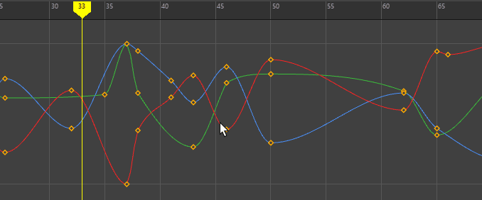
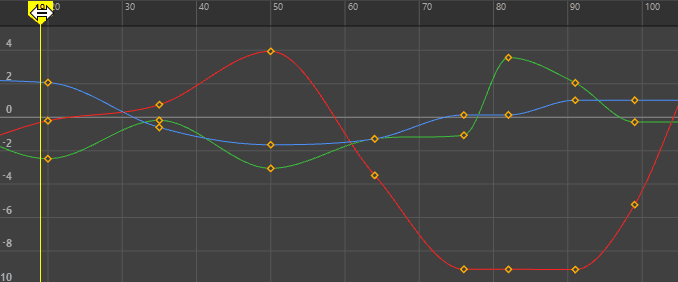
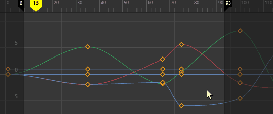
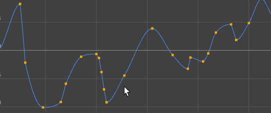
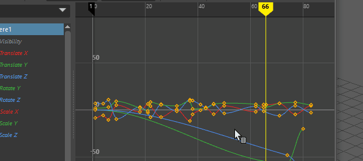
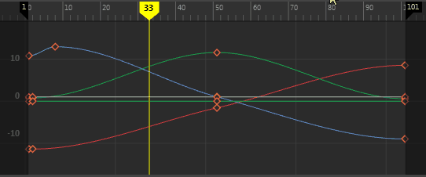
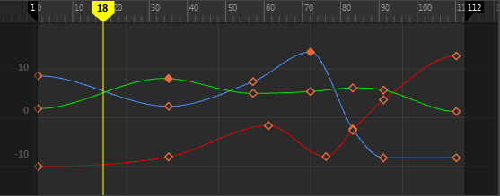
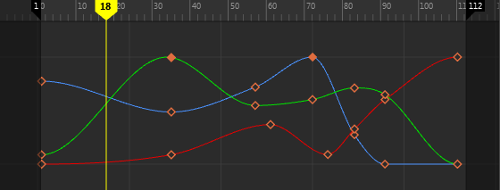

您可修改的动画关键帧之间插值的图形表示。
若要打开“曲线图编辑器”(Graph Editor)，请执行以下操作：
- 从主菜单栏中，选择。
- 从视图菜单栏中，选择> 曲线图编辑器”(Panels > Panel > Graph Editor)。
在“曲线图编辑器”(Graph Editor)中查看动画
选择已设置动画的对象，例如模型。两个关键帧之间的任何插值在“曲线图编辑器”(Graph Editor)中表示为动画曲线。请参见设置关键帧与关键帧动画和“曲线图编辑器”(Graph Editor)。
- 不再需要移动工具即可移动关键帧
- 默认情况下，切线是非加权的
- 提供交互式关键帧且支持隔离曲线
- 时间标记可拖动，能够移动到您在时间标尺上单击的任意位置
- 可调整播放范围大小
- 已简化视图名称。（“堆叠的曲线”(Stacked Curves)现已简化为“堆叠视图”(Stacked View)，“显示已归一化”(Display Normalized)现已简化为“归一化视图”(Normalized View)。此外，现在还提供了一个“绝对视图”(Absolute View)。）
- 可自定义的关键帧和曲线颜色（请参见颜色设置(Color Settings)中的“曲线图编辑器”(Graph Editor)部分）
下表提供了使用“曲线图编辑器”(Graph Editor)的各项任务的简要概述：
| 目标 | 操作 |
|---|---|
|
将“曲线图编辑器”(Graph Editor)放置在场景视图中 |
选择要在其中显示“曲线图编辑器”(Graph Editor)的场景视图，然后选择。 |
| 显示对象的动画曲线 | 在视口或大纲视图中选择对象，以显示其动画曲线。 在曲线图编辑器大纲视图(Graph Editor Outliner)中单击通道以显示相应的曲线。 |
|
选择关键帧 |
单击该关键帧或拖动选择它。

提示：
|
|
插入关键帧 |
Alt + i 插入一个与当前时间指示器的位置相对应的关键帧。 
|
|
在“旋转”(Rotation)、“缩放”(Scaling)或“平移”(Translation)通道上的当前时间指示器位置插入关键帧 |
Ctrl + Shift + E（旋转）、R（缩放）或 W（平移）。
|
|
在选定曲线上插入关键帧，而不管当前时间指示器的位置如何 |
在选定曲线上单击鼠标中键 + i。 |
| 将时间标记移动到选定关键帧。 | Alt + /（正斜线）
 |
|
在“曲线图编辑器”(Graph Editor)中启用选择前亮显 |
在“曲线图编辑器”(Graph Editor)菜单栏中，启用。
 提示： 使用“颜色”(Colors)窗口更改亮显颜色。选择，然后更改“动画编辑器”(Animation Editors)部分中的“预先选择亮显”(Pre-selection highlight)选项。
|
| 平移并放大“曲线图编辑器”(Graph Editor) | 与视口导航相同：
|
| 缩放曲线 | 选择动画曲线（请参见下文中的“选择曲线”），然后单击 F 键框显当前选择。 |
| 调整播放范围 | 在时间标尺上，单击暗区域的边并拖动以更改播放范围。通过拖动时间标尺上的标志，在时间视图中延伸播放范围。 |
| 拖动动画 | 拖动当前时间标记。
|
| 锁定曲线 | 按 H 键锁定曲线，按 J 键解除锁定曲线。

|
| 移动到上一个或下一个视图 | 使用方括号热键（[ 和 ]）。这些是相同的热键，用于在视口的摄影机视图之间移动。
若要使用这些热键导航视图，请在“曲线图编辑器”(Graph Editor)中单击，然后按左方括号 ([) 移动到上一个视图，或按右方括号 (]) 移动到下一个视图。 |
|
过滤损坏的 Euler 角度 |
选择损坏的动画曲线（例如，“旋转 X”(Rotate X)、“旋转 Y”(Rotate Y)和“旋转 Z”(Rotate Z)），然后选择。请参见“曲线图编辑器”(Graph Editor)的“曲线”(Curves)菜单。 |
|
更改现有曲线的旋转插值类型 |
使用“曲线图编辑器”(Graph Editor)和“摄影表”(Dope Sheet) “曲线”(Curves)中的“更改旋转插值”(Change Rotation Interp)选项。请参见“曲线图编辑器”(Graph Editor)的“曲线”(Curves)菜单。 |
| 选择关键帧 |
提示： 双击“移动最近拾取的关键帧工具”(Move Nearest Picked Key Tool)
 打开选项窗口，可以在其中设置“直接关键帧设置”(Direct Key Settings)。请参见“曲线图编辑器”(Graph Editor)工具栏主题中的“移动最近拾取的关键帧工具”(Move Nearest Picked Key Tool)条目。 打开选项窗口，可以在其中设置“直接关键帧设置”(Direct Key Settings)。请参见“曲线图编辑器”(Graph Editor)工具栏主题中的“移动最近拾取的关键帧工具”(Move Nearest Picked Key Tool)条目。
|
| 选择并移动关键帧组。 | 拖动矩形选择框，然后按住 Alt 键并重新定位选择框。

|
| 在已密集设置动画的曲线上选择关键帧 | 在“曲线图编辑器”(Graph Editor)的“选择”(Select)菜单中，激活“首选选定曲线”(Prefer Selected Curves)，然后单击具有要编辑的关键帧的曲线。
|
| 使关键帧变大 | 可以使用“动画”(Animation)首选项（在“设置”(Settings)下）中的“关键帧大小”(Key Size)设置来增加或减小关键帧的大小。 |
| 剪切、复制、粘贴和转化关键帧 | 使用关键帧切线标记菜单访问常用操作（例如，转化、剪切、复制、粘贴关键帧以及切换切线类型）。

在图表视图(Graph View)中按 Shift + s 并向左轻扫，以访问此菜单中的关键帧选项。 |
|
设置 FK/IK 关键帧曲线 |
使用“IK/FK 关键帧”(IK/FK Keys)菜单中的“设置 IK/FK 关键帧”(Set IK/FK Key)选项（在“动画”(Animation)菜单集中，）。 |
| 选择曲线 |
默认情况下，已启用曲线选择。
 |
| 关键帧类型 |
|
| 移动关键帧 | 选择并拖动关键帧。

若要打开“移动关键帧”(Move Key)工具，请选择“编辑 > 变换工具 > 移动关键帧工具 > 还可以使用鼠标中键单击“曲线图编辑器”(Graph Editor)中的空白区域，然后拖动以重新定位选定关键帧。 |
| 偏移关键帧 | 选择关键帧，然后按 Shift + 9 或 Shift + 0 以将关键帧向右或向左稍微移动一帧。 |
| 选择上一个/下一个关键帧 | 选择一个关键帧，然后按 Ctrl + Alt + ,（逗号）或 Ctrl + Alt + .（句点）将选择移动到上一个或下一个关键帧。 |
| 在时间方向上移动多个关键帧而不更改属性值 | 拖动选择要移动的关键帧。按住 Shift 键并使用鼠标中键向左或向右拖动关键帧。 |
| 更改入/出切线角度或权重 | 在“曲线图编辑器”(Graph Editor)工具栏的“入/出切线角度/权重”(In/Out Tangent Angle/Weighting)字段中输入值。 |
| 更改视图 | 绝对视图：按 1 键
这是默认视图。 
堆叠视图：按 2 键

归一化视图：按 3 键

选择可还原。 注：
当启用“显示已归一化”(Display Normalized)或者活动曲线列表更改时，曲线将自动重新归一化。 |


 )。
)。
 方形关键帧：加权切线
方形关键帧：加权切线